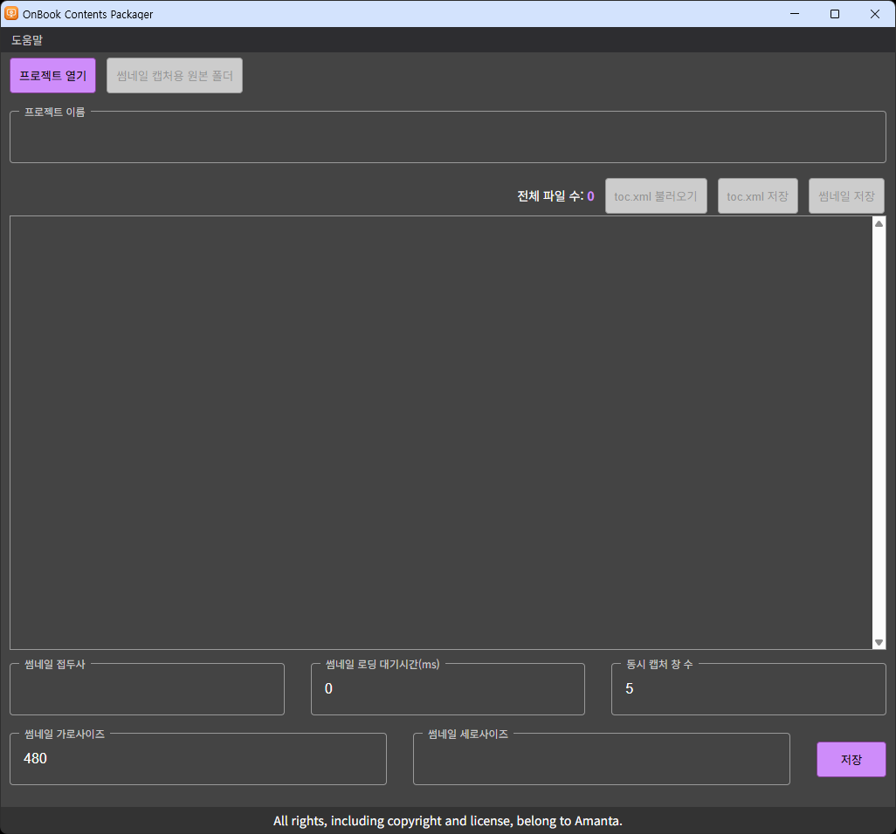
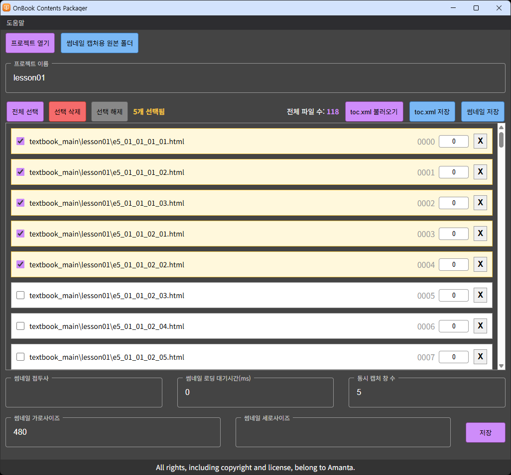
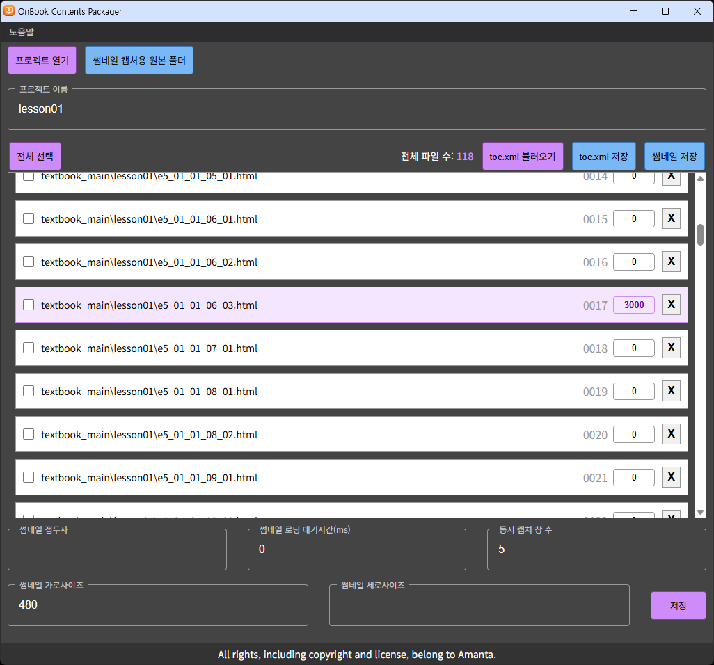
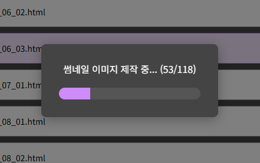
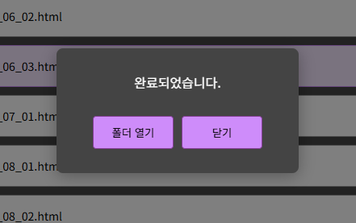
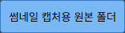

변경 이력최신 문서 v1.0.002
v1.0.0022026-08-06contents 패키저 v1.0.1
- 패키저 v1.0.1 반영
- 진도 ZIP 화면 스크린샷 교체
v1.0.0012026-07-13contents 패키저 v1.0.0
- 최초 배포
소개
contents contents 패키저는 완성된 HTML 콘텐츠를 OnBook 뷰어용 단원 콘텐츠 ZIP으로 패키징하는 도구입니다. 등록된 페이지(HTML) 순서에 맞게 썸네일 캡처와 목차 생성을 자동으로 처리합니다.
- 입력: 단원 콘텐츠 폴더 (HTML 원본)
- 출력: 콘텐츠 ZIP — 원본 파일 전체 + 썸네일 + 목차(toc)
사용 전 참고 사항
- 실행 환경 — Windows 데스크톱 앱입니다. 별도 설치 과정 없이 배포된 실행 파일을 실행하면 됩니다.
-
결과물 — 패키징 결과는
.zip파일 1개입니다. 내용은 수정하지 말고 그대로 전달하거나 아래 위치에 배치하세요. -
뷰어 배치 — ZIP의 압축을 풀어 뷰어의
platform/onbook/contents/(책 폴더)/(단원 폴더)/바로 아래에 내용물(toc.xml·web/)이 오도록 배치합니다. 책 폴더는 ebook과 동일한 책(권) 단위입니다 —unit01: 책 1,unit02: 책 2(수학 익힘책처럼 2권으로 구성되는 경우).platform/onbook/contents/ ├─ unit01/ ← 책 1 │ ├─ lesson01/ ← 단원 폴더 — ZIP 내용물을 이 아래에 배치 │ │ ├─ toc.xml │ │ └─ web/ │ └─ lesson02/ ← 단원 2 … └─ unit02/ ← 책 2 (2권 구성일 때만)
- 확인 방법 — 배치 후 OnBook 뷰어를 실행해 실제 표시를 확인합니다.
콘텐츠 폴더 준비
패키징 전 콘텐츠 폴더가 다음 조건을 갖추었는지 확인하세요.
-
페이지가 되는
.html파일이 폴더 안에 있어야 합니다. 하위 폴더까지 자동 스캔됩니다. - 이미지·CSS·JS 등 리소스는 폴더 안에 함께 두세요. 폴더의 모든 파일이 그대로 ZIP에 포함됩니다.
- 파일 목록은 파일명 기준으로 자동 정렬됩니다(숫자 인식, 같은 접두사끼리 그룹). 순서는 불러온 뒤 드래그로 조정할 수 있습니다.
불필요한 파일(작업 원본, 백업 등)이 폴더에 있으면 ZIP 용량이 커집니다.
배포용 콘텐츠만 남긴 폴더로 패키징하세요.
화면 구성

| 영역 | 설명 |
|---|---|
| 메뉴바 |
도움말 — 온라인 가이드(이 문서를 브라우저로 열기) ·
프로그램 정보(버전 정보)
|
| 상단 | 프로젝트 열기 · 썸네일 캡처용 원본 폴더 · 프로젝트 이름 (ZIP 파일명으로 사용) |
| 파일 목록 (중앙) | 스캔된 HTML 목록. 드래그로 순서 변경, 체크박스로 다중 선택·삭제, 항목별 개별 대기시간 입력, 개별 제거 |
| 하단 | 썸네일 설정(접두사·대기시간·동시 캡처 창 수·크기)과 저장 버튼 |
패키징 절차
-
프로젝트 열기 —
프로젝트 열기버튼으로 콘텐츠 폴더를 선택합니다. 폴더 안의 HTML이 목록에 표시되고, 폴더명이 프로젝트 이름(ZIP 파일명)으로 자동 입력됩니다. 이름은 수정할 수 있습니다. 목록 각 항목 오른쪽의 4자리 숫자는 페이지 순번(0000부터)으로, 썸네일 파일 번호로 사용됩니다.
프로젝트를 연 상태 — HTML 목록과 전체 파일 수가 표시됩니다 -
페이지 목록 정리 — 목록의 순서가 곧
뷰어에 표시되는 콘텐츠 단원 페이지 순서입니다. 드래그로 순서를 조정하고,
페이지로 쓰지 않을 HTML은 제거할 수 있습니다. 체크박스를 누른 상태에서
마우스를 드래그하면 여러 항목을 체크 또는 해제할 수 있습니다.

다중 선택 상태 — 전체 선택 · 선택 삭제 · 선택 해제 버튼이 나타납니다 -
개별 대기시간 입력(선택) — 로딩이 오래 걸리는
페이지는 썸네일 캡처에 필요한 시간을 목록 오른쪽의 개별
대기시간(ms) 입력란에 입력합니다.
0이면 공통 대기시간을 따릅니다.-
toc.xml 저장— ZIP을 만들지 않고 현재 목록(순서·개별 대기시간 포함) 기준의toc.xml만 저장합니다. -
toc.xml 불러오기— PC에 저장된toc.xml을 불러와, 파일명이 일치하는 항목의 개별 대기시간을 복원합니다. 같은 콘텐츠를 다시 패키징할 때 대기시간을 재입력하지 않아도 됩니다.

개별 대기시간을 입력한 항목은 색으로 구분됩니다 -
-
썸네일 설정 — 아래 표를 참고해 설정합니다.
설정 설명 썸네일 접두사 썸네일 파일명 앞에 붙는 문자열. OnBook 뷰어는 0000부터 시작하는 4자리 숫자 파일명만 인식하므로, OnBook 뷰어용 패키징에서는 반드시 비워 두세요.썸네일 로딩 대기시간(ms) 페이지 로드 후 캡처까지 기다리는 공통 시간. 애니메이션·이미지 로딩이 있는 콘텐츠는 값을 늘리세요. 동시 캡처 창 수 동시에 여는 캡처 창 수 (1~9, 기본 5). 클수록 빠르지만 PC 성능에 따라 불안정할 수 있습니다. 썸네일 가로/세로 크기 픽셀 단위. 가로만 입력하면 세로는 첫 페이지 비율로 자동 계산됩니다 (기본 가로 480). -
저장 —
저장버튼을 누르고 ZIP 저장 위치를 지정하면 썸네일 캡처가 시작됩니다.캡처 중에는 가급적 PC를 조작하지 말아 주세요. 썸네일이 잘못 캡처될 수 있습니다. -
완료 — 진행 창에 단계(썸네일 이미지 제작 → ZIP
파일 제작)가 표시되고, 완료 후
폴더 열기로 결과 ZIP을 바로 확인할 수 있습니다.
썸네일 이미지 제작 
ZIP 파일 제작 
완료 — 폴더 열기 · 닫기 - 뷰어에 배치 — 결과 ZIP을 OnBook 뷰어에 배치해야 작업이 마무리됩니다. 배치 경로는 소개의 "뷰어 배치"를 참고하세요.
부가 기능
| 기능 | 설명 |
|---|---|
|
|
ZIP을 만들지 않고 썸네일 이미지만 지정 폴더에 저장합니다. |
|
 |
콘텐츠의 iframe이 프로젝트 폴더 밖의 경로를 참조해 캡처가 깨지는 경우, 캡처에 사용할 원본 폴더를 별도 지정합니다. iframe이 참조하는 HTML과 파일명이 같은 원본 폴더의 HTML을 자동으로 매핑합니다. |
출력 ZIP 구조
저장된 ZIP 내부는 다음과 같이 구성됩니다. 내용을 직접 수정하지 마세요.
(프로젝트 이름).zip ├─ toc.xml ← 목차 (href에 web/ 경로 포함) └─ web/ ├─ toc.xhtml ← 뷰어용 목차 (web 내부 상대 경로) ├─ page_thumbnails/ ← 썸네일 (0000.jpg, 0001.jpg …) └─ (원본 폴더의 모든 파일)
toc.xml과 toc.xhtml의 경로 규칙
-
toc.xml— ZIP 루트 기준이므로 href에web/접두사가 포함됩니다. -
toc.xhtml—web/폴더 안에 있으므로 href에web/접두사가 없습니다. -
개별 대기시간을 입력한 페이지는
toc.xml의delay속성으로 기록됩니다 (toc.xhtml에는data-delay).
<!-- toc.xml --> <item> <label>e5_01_01_01_01</label> <content section="page-1" pageNumber="1" href="web/lesson01/e5_01_01_01_01.html" delay="3000"/> ← 개별 대기시간(ms) </item> <!-- toc.xhtml (web/ 안) --> <li page="1" data-delay="3000"><a href="lesson01/e5_01_01_01_01.html">e5_01_01_01_01</a></li>